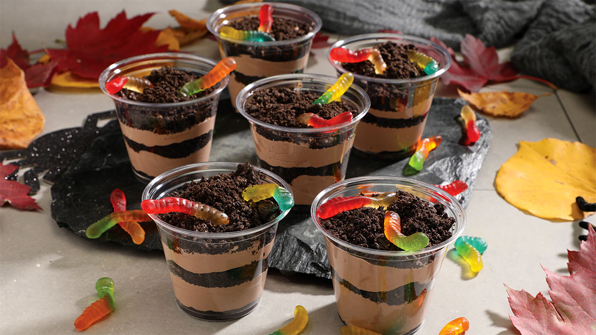

Dirt cake is a no-bake dessert made with Oreo cookies, pudding, and whipped cream on top. The name of the dish refers to the fact that the cake has a rough, messy, and dirty look. Often, gummy worms are placed on top of the cake along with the whipped cream, acting as a decoration.
Meal prep time : 20 minutes
Servings : 10